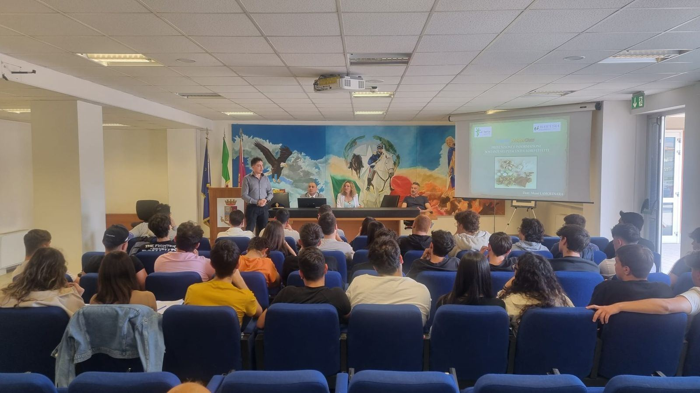
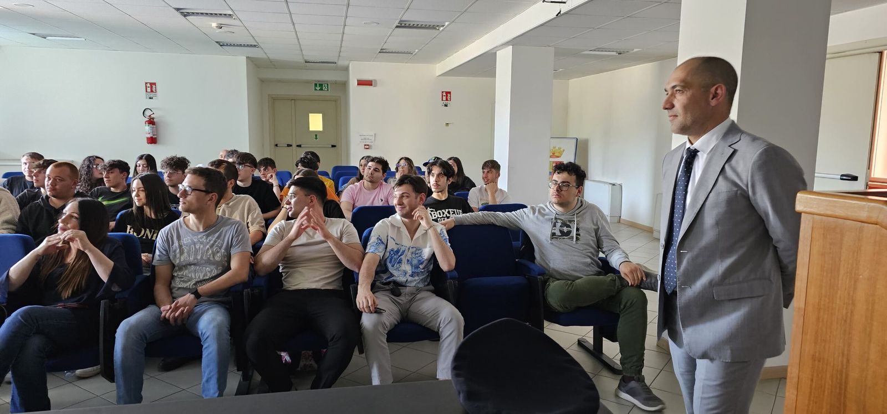
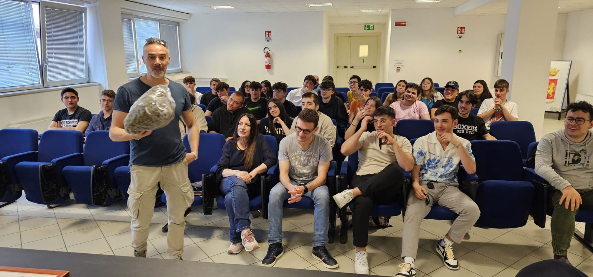
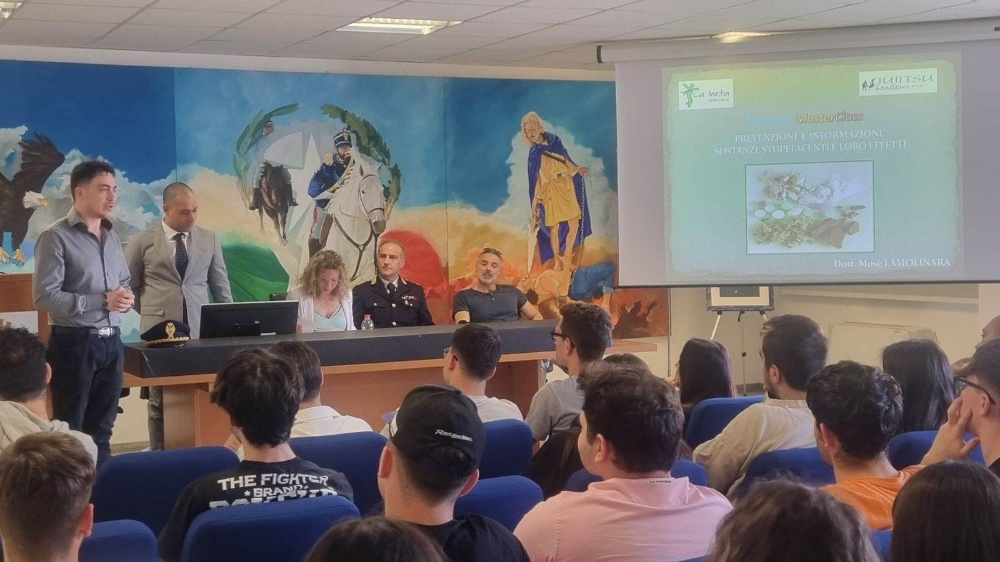

Sabato 13 aprile si è svolto, presso la Questura dell’Aquila, il quarto incontro di MasterClass 2024, programma formativo promosso e coordinato dalle associazioni culturali Residenti nei Centri Storici “3:33” e Centro Studi La Meta, patrocinato dal Comune dell’Aquila, Regione Abruzzo, Ufficio Scolastico Regionale per l’Abruzzo ed Università degli Studi dell’Aquila.
L’evento si è articolato in due fasi distinte; il primo step con un seminario intitolato “Sostanze stupefacenti e psicotrope di nuova generazione: Informazione, Prevenzione e Metodi di Riconoscimento”, condotto dal Dott. Mosè Lamolinara, dirigente del laboratorio chimico di ARTA Abruzzo e presidente dell’associazione Jujitsu Academy. Durante la presentazione, il Dott. Lamolinara ha messo in luce i rischi legati alle droghe da stupro, discutendo le loro modalità di somministrazione in ambienti come discoteche e bar, nonché gli impatti devastanti dell’abuso di alcol ed uso, anche occasionale, di nuove droghe sintetiche come il Fentanyl. Originario dalla Cina e noto come ’droga degli zombie’, il Fentanyl è rapidamente diventato una grave piaga sociale negli Stati Uniti, con crescenti preoccupazioni anche in Europa.
L’approccio interattivo del seminario ha permesso agli studenti di esplorare in dettaglio le conseguenze legali, nonché gli effetti a breve e lungo termine delle droghe sul corpo umano. L’evento si è concluso con una seconda sessione, di carattere operativo, gestita dall’Ispettore Roberto Ciuffetelli, vice responsabile della Sezione Antidroga della Polizia di Stato e dal Dott. Pieremidio Bianchi, Commissario Capo della Divisione Polizia Anticrimine che hanno illustrato le tecniche investigative utilizzate, dipanando dubbi e rispondendo alle interessanti domande dei giovani partecipanti.
Il presidente dell’Associazione 3:33, Dott. Mirko Rocci, ed il presidente onorario del Centro Sudi La Meta, Dott.ssa Claudia Pagliariccio, esprimono gratitudine nei riguardi della Questura dell’Aquila nelle persone del Questore Dott. De Simone, dell’attuale reggente V. Questore Vicario Dott.ssa Tomaciello per aver aperto le porte della Questura agli studenti.
I due rappresentanti delle associazioni ringraziano, altresì, il Dott. Pieremidio Bianchi per aver interagito attivamente con gli studenti illustrando le articolazioni e le funzioni degli uffici in particolare della Sala Operativa 113 emergenza, evidenziando il ruolo di prevenzione che ogni giorno la Polizia di Stato svolge sul territorio anche attraverso l’adozione di strumenti tecnologici come YouPol, l’App della Polizia di Stato sviluppata per la lotta allo spaccio di droga, bullismo, violenza domestica ed ogni forma violazione della legge che i cittadini sono tenuti a segnalare. Infine, il plauso è esteso anche all’ispettore Roberto Ciuffetelli, per aver chiarito le modalità di acquisizione, accertamento e riscontro delle informazioni che l’attività di indagine richiede.
Al termine dell’incontro, gli organizzatori del programma MasterClass, Pagliariccio e Rocci, hanno espresso grande soddisfazione per il successo dell’evento, tenutosi per il secondo anno consecutivo in Questura. «Ancora una volta, l’evento sulle droghe si è confermato tra i più apprezzati del nostro programma. Il suo alto valore formativo, unito ad un approccio originale e un linguaggio calibrato per il nostro pubblico, nel luogo emblema di legalità, ha reso il messaggio estremamente accessibile, superando nuovamente le aspettative dei partecipanti», hanno affermato, sottolineando i risultati positivi emersi dai questionari anonimi distribuiti ai giovani al termine della giornata.
“Grazie a queste conoscenze, i giovani possono contare su una maggiore consapevolezza e sono quindi più pronti per riconoscere e proteggersi dalle crescenti minacce di sicurezza, un beneficio indispensabile nel contesto attuale“, queste le parole con cui gli organizzatori hanno chiuso l’evento.
Il prossimo appuntamento di MasterClass 2024, aperto al pubblico, è previsto per sabato 20 aprile alle ore 15:00 presso la Sala Ipogea del palazzo dell’Emiciclio di L’Aquila e vedrà la partecipazione del primo degli ospiti speciali dell’edizione 2024, il Dott. Pasqualantonio Pingue, Responsabile Operativo del National Enterprise for NanoScience and NanoTechnoloy (NEST) e Responsabile dell’Area Ricerca e Innovazione della Scuola Normale Superiore di Pisa, con un seminario dal titolo “La Scuola Normale Superiore di Pisa: Attività, Orientamento e Nanoscienze”.
All’evento è confermata la partecipazione del Rettore dell’Università dell’Aquila, Prof. Edoardo Alesse, dell’Assessore Regionale e Presidente del Consiglio Comunale Roberto Santangelo, invitati in qualità di rappresentanti degli enti patrocinatori del programma formativo insieme al Direttore Generale dell’Ufficio Scolastico Regionale per l’Abruzzo, Dott. Massimiliano Nardocci.


